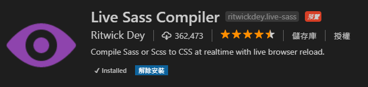
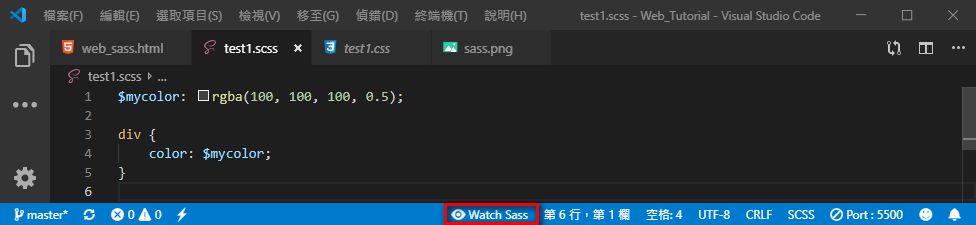

網頁設計 - CSS 擴充 Sass
一、認識 Sass
Sass (Syntactically Awesome StyleSheets) 是 CSS 的擴充讓開發者可以撰寫更簡潔、富語意、重複性佳、可維護性和可延展性佳的 CSS 程式碼。
二、安裝 Sass
延伸模組內搜尋 Sass 並且安裝，此模組會將 Sass 加上顏色辨識。
延伸模組內搜尋 Live Sass Compiler 並且安裝，安裝完要重新啟動 VSCode，此模組提供將 Sass 轉譯為 CSS 的功能。

三、使用 Sass
Sass 分兩種不同的寫法，第一種副檔名為sass，第二種副檔名為scss，在此教學中會使用第二種寫法，可以參考 Sass 與 Scss 差異介紹兩者的不同之處。
首先建立一個檔案副檔名使用 scss ，在此檔案下方點選Watch Sass自動轉譯成 css 檔。

3-1 變數 variable
變數用於儲存資料，可以儲存顏色、尺寸、字型等等任何資料。
3-2 巢狀 nesting
可以使用巢狀避免選取器過長的問題。
巢狀也可以使用在屬性上。
3-3 匯入 import
可以使用@import匯入其他的 css 檔。
3-4 混入 mixin
與 pug 相同，可以使用混入，注意要使用混入時必須搭配關鍵字@include才可以。
3-5 擴展 extend
擴展，可以讓選取器繼承其他選取器內的所有屬性與值。
3-6 運算 operators
可以使用運算符號加 +、減 -、乘 *、除 /、餘 %這五種運算符號幫助運算。